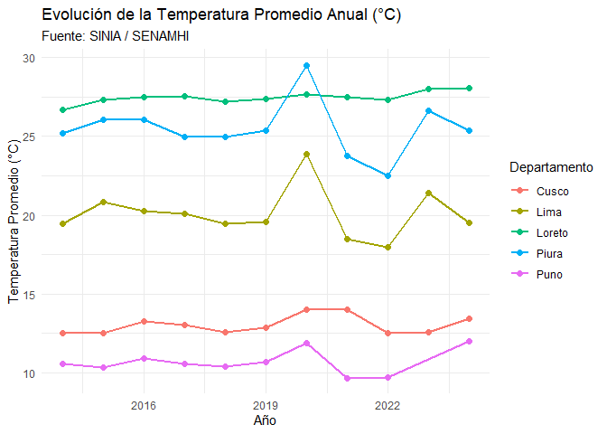

siniaR es un paquete para R diseñado para facilitar el acceso programático, exploración y análisis de las estadísticas ambientales oficiales del Perú, provenientes del Sistema Nacional de Información Ambiental (SINIA / MINAM) y del Instituto Nacional de Estadística e Informática (INEI).
📦 Instalación
Puedes instalar la versión de desarrollo de siniaR desde GitHub:
# install.packages("remotes")
remotes::install_github("PaulESantos/siniaR")🚀 Características Principales
-
Acceso directo al SINIA / MINAM en vivo:
-
sinia_indicadores(): Catálogo de más de 180 estadísticas ambientales según el marco internacional MDEA (ONU) o el marco SINIA. -
sinia_buscar(): Búsqueda rápida de indicadores por palabras clave (ej."temperatura","pm10","glaciares","bosque"). -
sinia_ficha(): Consulta interactiva de la Ficha Técnica oficial con metodologías, fuentes, fórmulas de cálculo y notas. -
sinia_datos(): Descarga de series históricas en formato tidy (wideolonglisto paraggplot2). -
sinia_estadistica(): Objeto integrado con metadatos y datos tabulares.
-
-
15 Datasets Preempaquetados (INEI / SERNANP / SENAMHI):
- Áreas de Conservación Privada y Regional (
acp_sernanp,acr_sernanp). - Bosques y Cobertura Amazónica (
cap_pot_bosq_amaz,sup_dep_sup_bha,superficie_bha). - Flora y Fauna (
flora_fauna_2013_2020,flora_fauna_ende). - Clima y Meteorología (
temperatura,temperatura_maxima,precipitacion,humedad_rel). - Calidad del Aire (
prom_mensual_pm_menor_10mcr). - Hidrografía y Territorio (
rios_frontera,islas_islotes,xlsx_links).
- Áreas de Conservación Privada y Regional (
💡 Ejemplos de Uso
1. Explorar y buscar estadísticas en el SINIA
# Buscar estadísticas relacionadas a la calidad del aire
resultados <- sinia_buscar("PM10")
head(resultados)
#> # A tibble: 2 × 7
#> id numeral nombre nivel clasificador_id padre_id marco
#> <int> <chr> <chr> <int> <int> <int> <chr>
#> 1 42 1.3.1.2 Promedio anual de partícul… 4 NA 62 mdea
#> 2 44 1.3.1.4 Material particulado con d… 4 NA 62 mdea2. Consultar la Ficha Técnica de un Indicador
# Consultar la ficha técnica de Temperatura Promedio Anual (ID = 1)
ficha <- sinia_ficha(1)
ficha
#>
#> ── Ficha Tecnica: Temperatura del aire promedio anual en estación de medición se
#> • ID: 1 (Numero: 1)
#> • Fuente: Servicio Nacional de Meteorología e Hidrología (Senamhi)
#> • Unidad de Medida: Grado Celsius (°C)
#> • Periodo de Serie: 2014-2024
#> • Ambito Geografico: Nacional, Departamental, Provincial, Distrital, Estación
#> de medición
#> • Clasificacion MDEA: 1.1.1
#>
#> ── Descripcion ──
#>
#> La temperatura del aire es uno de los elementos climáticos que está en relación
#> directa con el balance de energía, es decir, su valor o magnitud depende de la
#> fracción de Radiación Neta (Rn). Sin embargo, esta relación directa, entre
#> temperatura y Rn es afectado por otros factores como se ve a continuación: - El
#> movimiento de rotación de la tierra que da origen al ciclo diurno y el
#> movimiento de traslación que origina el ciclo anual. - La amplitud de estas
#> ondas (ciclo diurno de temperatura) son alterados por: la superficie sobre la
#> cual incide la radiación solar, masas de aire, nubosidad, transparencia
#> atmosférica, relieve topográfico, etc.
#>
#> ── Formula de Calculo ──
#>
#> Tapa = Suma de la temperatura del aire promedio mensual (Tapm) / Número de
#> meses con temperatura del aire promedio mensual (nm) del año (condición nm
#> >=7). Tapm = Suma de la temperatura del aire promedio diaria (Tapd) / Número
#> de días con temperatura del aire promedio diario (nd) del mes (condición nd
#> >=16). Donde: Tapa: temperatura del aire promedio anual Tapm: temperatura del
#> aire promedio mensual Tapd: temperatura del aire promedio diario nd: número de
#> días del mes nm: número de meses del año
#>
#> ── Metodologia ──
#>
#> La temperatura del aire promedio anual es información procesada de los datos
#> provenientes de la lectura del termómetro y de los termómetros extremos
#> (máximos y mínimos) de las estaciones de medición ubicadas principalmente en
#> capital de departamento.
#> ℹ Nota: es el valor de la temperatura del aire promedio anual en la estación de medición, ubicada principalmente en capital de departamento. (…) No se cuentan con estadísticas.3. Descargar datos en formato Tidy y visualizar
# Descargar datos en formato largo (long) para graficar
temp_long <- sinia_datos(1, pivot = "long")
# Filtrar algunos departamentos y visualizar la evolución temporal
deptos_interes <- c("Lima", "Loreto", "Cusco", "Piura", "Puno")
temp_long |>
filter(departamento %in% deptos_interes, !is.na(valor)) |>
ggplot(aes(x = anio, y = valor, color = departamento)) +
geom_line(linewidth = 1) +
geom_point(size = 2) +
labs(
title = "Evolución de la Temperatura Promedio Anual (°C)",
subtitle = "Fuente: SINIA / SENAMHI",
x = "Año",
y = "Temperatura Promedio (°C)",
color = "Departamento"
) +
theme_minimal()